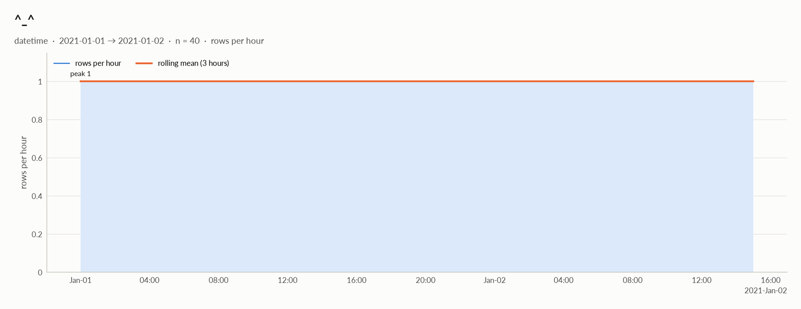
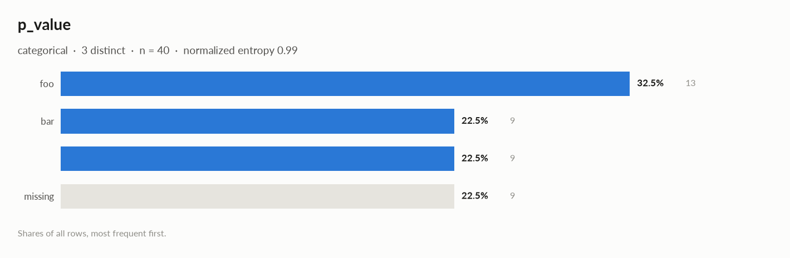

elessar report
40 rows × 7 columns · pandas.DataFrame · read in 0.0s · generated 2026-10-28 11:01 by elessar 0.3.0
Key findings Overall statistics Time series Distributions Outliers Data quality Multivariate statistics Preparation plan Attribute statistics Run Key findings
HIGH price ($): suspicious: 26 negative values in a quantity that should be >= 0MEDIUM duplicate or non-string column names were renamed (a, a.1, ...)MEDIUM None: constant column carries no information -> drop itMEDIUM a|b: identical to column 'target' -> drop one of themMEDIUM n: redundant with 'a|b' (eta +1.000), 'target' (eta +1.000) -> keep only oneMEDIUM n: should-be-numeric: df['n'] = elessar.types.parse_numeric(df['n'])MEDIUM p_value: 22.5% missing -> drop, or impute and add a missing-indicatorMEDIUM p_value: placeholder values used as missing: '' (9) -> replace with NaNOverall statistics
Rows 40 Columns 7 Memory 2.9 KB Potential saving 716 B Pandas dtypes period[M]=2, datetime64[us, UTC]=1, str=1, float64=1, string=1, complex128=1 Semantic types categorical=3, datetime=1, numeric_string=1, numeric_continuous=1, constant=1 Duplicate rows 0 (0.0%) Missing cells 3.2%
Numeric columns at a glance
column count missing mean std min median max skew kurtosis outliers best fit n40 0.0% 58.98 30.63 0.35 66.42 98.37 -0.586 -0.773 0.0% beta(a=0.758, b=0.56, loc=0.252, scale=98.2) price ($)40 0.0% -2.126e-301 0 -2.094e-300 -1.627e-301 1.516e-300 - - 0.0% -
Categorical columns at a glance
column type count missing distinct most frequent share entropy p_valuecategorical 31 22.5% 3 foo 41.9% 0.985 targetcategorical 40 0.0% 40 2020-01 2.5% 1 a|bcategorical 40 0.0% 40 2020-01 2.5% 1
Time series
The table is a single time series (one row per timestamp) , indexed by ^_^: hour steps, 100% regular, 2021-01-01 → 2021-01-02, 40 steps.
series steps trend stationarity lag-1 autocorr. seasonality n40 none (tau +0.09, p 0.4) stationary (ADF -4.26, 5% crit -2.94) 0.00 none detected price ($)40 - - - -
Treatment
step what to do code Windows rolling windows of 3 steps and lags 1, 2 as features, shifted by one step so they only see the past df['lag_1'] = df['<value>'].shift(1)
df['lag_2'] = df['<value>'].shift(2)
df['roll_mean_3'] = df['<value>'].shift(1).rolling(3).mean()Validation never shuffle: use expanding-window folds (below), with a gap equal to the forecast horizon from sklearn.model_selection import TimeSeriesSplit
cv = TimeSeriesSplit(n_splits=5, test_size=4, gap=0)Augmentation on the training folds only: jittering (noise at 3-5% of the std), scaling, window slicing, magnitude warping rng = np.random.default_rng(0)
jittered = y + rng.normal(0, 0.03 * y.std(), len(y))
scaled = y * rng.normal(1, 0.1)
start = rng.integers(0, len(y) // 10); sliced = y[start:start + int(0.9 * len(y))]
warp = np.interp(np.arange(len(y)), np.linspace(0, len(y) - 1, 6), rng.normal(1, 0.1, 6))
warped = y * warp
Validation folds (expanding window, on the real dates)
fold train validate train steps validation steps 1 2021-01-01 → 2021-01-01 19:00 2021-01-01 20:00 → 2021-01-01 23:00 20 4 2 2021-01-01 → 2021-01-01 23:00 2021-01-02 → 2021-01-02 03:00 24 4 3 2021-01-01 → 2021-01-02 03:00 2021-01-02 04:00 → 2021-01-02 07:00 28 4 4 2021-01-01 → 2021-01-02 07:00 2021-01-02 08:00 → 2021-01-02 11:00 32 4 5 2021-01-01 → 2021-01-02 11:00 2021-01-02 12:00 → 2021-01-02 15:00 36 4
Distributions
Normality is tested four ways (Shapiro-Wilk on up to 5,000 values, D'Agostino K², Jarque-Bera, Anderson-Darling); the verdict is 'not normal' when at least half of them reject at alpha 0.05. Every candidate distribution is fitted by maximum likelihood and ranked by AIC; the Akaike weight is its relative support among the candidates.
With thousands of values every test rejects even a good fit, so read KS D (the largest gap between the fitted and the observed cumulative distribution) as the size of the misfit: below 0.03 close, below 0.08 fair, above poor. KS p-values are optimistic since the parameters come from the same data. For integer columns the gap is measured on the integer support and the p-value comes from a chi-square goodness-of-fit test.
column n normality tests rejecting best fit parameters weight ΔAIC to 2nd KS D KS p shape n40 not normal 2 of 4 beta a=0.758, b=0.56, loc=0.252, scale=98.2 0.96 6.5 (uniform) 0.133 (poor) 0.44 moderately left-skewed price ($)40 normal 1 of 4 - roughly symmetric, no candidate could be fitted
Outliers
Three methods per numeric column: 3 sigma (|value - mean| > 3 standard deviations), boxplot (outside the Tukey fences Q1 - 1.5 IQR, Q3 + 1.5 IQR) and modified z (Hampel: |0.6745 (value - median) / MAD| > 3.5). A consensus outlier is flagged by at least two.
column 3 sigma boxplot modified z consensus fences action n0 0 0 0 (0.0%) [-18.12, 140.7] keep price ($)0 0 0 0 (0.0%) [-2.331e-300, 1.750e-300] keep
Data quality
severity column message high price ($)suspicious: 26 negative values in a quantity that should be >= 0 medium - duplicate or non-string column names were renamed (a, a.1, ...) medium Noneconstant column carries no information -> drop it medium a|bidentical to column 'target' -> drop one of them medium nredundant with 'a|b' (eta +1.000), 'target' (eta +1.000) -> keep only one medium nshould-be-numeric: df['n'] = elessar.types.parse_numeric(df['n']) medium p_value22.5% missing -> drop, or impute and add a missing-indicator medium p_valueplaceholder values used as missing: '' (9) -> replace with NaN info - dtype optimizations save ~716 B: n -> float64, price ($) -> float32, p_value -> category (see quality['dtype_optimizations'] for code) info ^_^a time series, hour steps -> time-ordered validation, lags and windows (see Time series) info a|b2 data items per cell joined by '-' (e.g. '2021-11') -> split into 2 columns info target2 data items per cell joined by '-' (e.g. '2021-11') -> split into 2 columns
Memory: suggested dtypes save 716 B
column current suggested saving code nstr float64 236 B (42%) df['n'] = elessar.types.parse_numeric(df['n'])price ($)float64 float32 160 B (50%) df['price ($)'] = df['price ($)'].astype('float32')p_valuestring category 320 B (82%) df['p_value'] = df['p_value'].astype('category')
Multivariate statistics
Dimensionality reduction
PCA not applicable: needs at least 3 numeric columns and enough rows (1 columns, 40 rows)
Associations between columns
4 pairs tested, 0 significant after Benjamini-Hochberg correction (alpha 0.05).
Strongest associations
column A column B method value 95% CI n p_adj sig a|b n eta +1.000 40 0.55 target n eta +1.000 40 0.55
Preparation plan
Cleaning: invalid values 2, wrong formats 2, duplicates 1, missing data 1. Transformation: decomposition 3, encode 3.
Cleaning
action column why code Invalid values p_valueplaceholders used as missing: '' ×9 df['p_value'] = df['p_value'].replace([''], np.nan)Invalid values price ($)impossible values: ['26 negative values in a quantity that should be >= 0'] df.loc[<invalid condition on 'price ($)'>, 'price ($)'] = np.nanWrong formats nshould-be-numeric df['n'] = elessar.types.parse_numeric(df['n'])Wrong formats p_valueshould-be-category df['p_value'] = df['p_value'].astype('category')Duplicates a|bidentical to 'target' df = df.drop(columns=['a|b'])Missing data p_value22.5% missing: use an explicit 'missing' category df['p_value'] = df['p_value'].fillna('missing')
Transformation
action column why code Decomposition ^_^a date is not a feature: decompose into calendar parts d = pd.to_datetime(df['^_^'], errors='coerce')
df['^_^' + '_year'], df['^_^' + '_month'] = d.dt.year, d.dt.month
df['^_^' + '_dow'], df['^_^' + '_hour'] = d.dt.dayofweek, d.dt.hourDecomposition targetseveral data items in one cell (2 parts joined by '-', e.g. '2021-11'): split them df[['target_1', 'target_2']] = df['target'].str.split('-', n=1, expand=True)Decomposition a|bseveral data items in one cell (2 parts joined by '-', e.g. '2021-11'): split them df[['a|b_1', 'a|b_2']] = df['a|b'].str.split('-', n=1, expand=True)Encode p_value3 labels: one-hot df = pd.get_dummies(df, columns=['p_value'], dummy_na=True)Encode target40 labels: too many for one-hot; target encoding (cross-fitted) or frequency encoding df['target'] = df['target'].map(df['target'].value_counts(normalize=True))Encode a|b40 labels: too many for one-hot; target encoding (cross-fitted) or frequency encoding df['a|b'] = df['a|b'].map(df['a|b'].value_counts(normalize=True))
Attribute statistics
column type missing distinct alerts ^_^datetime 0.0% 40 0 nnumeric_string 0.0% 40 0 price ($)numeric_continuous 0.0% 40 0 p_valuecategorical 22.5% 3 0 Noneconstant 0.0% 1 0 targetcategorical 0.0% 40 0 a|bcategorical 0.0% 40 0
^_^ · datetimedatetime64[us, UTC] · datetime dtype
Profile
type datetime dtype datetime64[us, UTC] values 40 missing 0 (0.0%) distinct 40 (100.0%) memory 320 B
Time
first 2021-01-01 last 2021-01-02 15:00:00 span 1 days 15:00:00 frequency h duplicated timestamps 0 in the future 0 before 1900 0 largest gap 0 days 01:00:00 (2021-01-01 → 2021-01-01 01:00:00)
Rows by weekday: Fri 24, Sat 16 Rows by hour: 0 2, 1 2, 2 2, 3 2, 4 2, 5 2, 6 2, 7 2, 8 2, 9 2, 10 2, 11 2, 12 2, 13 2, 14 2, 15 2, 16 1, 17 1, 18 1, 19 1, 20 1, 21 1, 22 1, 23 1 
n · numeric_stringstr · 100% of values are numbers stored as text
Profile
type numeric_string dtype str values 40 missing 0 (0.0%) distinct 40 (100.0%) memory 556 B
Center
mean 58.98 95% CI of mean [49.19, 68.78] median 66.42 95% CI of median [49.45, 74.71] trimmed mean 61.18 geometric mean 40.99 harmonic mean 8.551
Spread
std 30.63 variance 938 sem 4.843 IQR 39.7 MAD 18.37 CV 0.5193 range 98.02
Quantiles
min 0.35 p1 0.9935 p5 2.599 p25 41.43 p50 66.42 p75 81.12 p95 97.48 p99 98.33 max 98.37 sum 2,359.3
Shape
skewness -0.586 excess kurtosis -0.773 KDE modes 1 bimodality coef. 0.543 decimals 2 heaping ×0.9
Outliers & counts
IQR fences [-18.12, 140.7] outside fences 0 (0.0%) |z| > 3 0 (0.0%) modified z > 3.5 0 (0.0%) zeros 0 negatives 0 infinite 0
Row order
monotonic no lag-1 autocorrelation 0.006 (p 0.97)
Normality: not normal (n = 40)
test statistic p-value at alpha 0.05 Shapiro-Wilk 0.9145 0.0052 rejects normality D'Agostino K² 4.283 0.12 consistent with normal Jarque-Bera 3.256 0.2 consistent with normal Anderson-Darling 1.038 0.01 rejects normality
Best fits (continuous, 13 candidates fitted on 40 values)
# distribution parameters AIC ΔAIC weight BIC KS D KS p 1 beta a=0.758, b=0.56, loc=0.252, scale=98.2 364.345 0.0 0.96 371.1 0.133 (poor) 0.44 2 uniform loc=0.35, scale=98 370.814 6.5 0.04 374.191 0.226 (poor) 0.028 3 normal loc=59, scale=30.2 390.254 25.9 0.00 393.632 0.129 (poor) 0.48
should-be-numeric : df['n'] = elessar.types.parse_numeric(df['n'])price ($) · numeric_continuousfloat64 · float64 dtype: 40 distinct real values
Profile
type numeric_continuous dtype float64 values 40 missing 0 (0.0%) distinct 40 (100.0%) memory 320 B
Center
mean -2.126e-301 95% CI of mean [-2.126e-301, -2.126e-301] median -1.627e-301 95% CI of median [-6.240e-301, 2.440e-302] trimmed mean -2.025e-301 geometric mean - harmonic mean -
Spread
std 0 variance 0 sem 0 IQR 1.020e-300 MAD 5.451e-301 CV 0 range 3.609e-300
Quantiles
min -2.094e-300 p1 -2.067e-300 p5 -1.636e-300 p25 -8.004e-301 p50 -1.627e-301 p75 2.199e-301 p95 1.145e-300 p99 1.416e-300 max 1.516e-300 sum -8.503e-300
Shape
skewness - excess kurtosis - KDE modes 1 bimodality coef. - decimals 0
Outliers & counts
IQR fences [-2.331e-300, 1.750e-300] outside fences 0 (0.0%) |z| > 3 0 (0.0%) modified z > 3.5 0 (0.0%) zeros 0 negatives 26 infinite 0
Normality: normal (n = 40)
test statistic p-value at alpha 0.05 Shapiro-Wilk - n/a consistent with normal D'Agostino K² - n/a consistent with normal Jarque-Bera - n/a consistent with normal Anderson-Darling - 0.01 rejects normality
p_value · categoricalstring · 3 distinct labels
Profile
type categorical dtype string values 31 missing 9 (22.5%) distinct 3 (9.7%) memory 391 B mode foo ×13
Labels
cardinality 3 entropy 1.56 bits (0.99 of max) Gini impurity 0.656 imbalance ×1.444 rare labels 0 (0.0% of rows) uniform? chi² p 0.6
Most frequent values
value count share foo13 41.9% bar9 29.0% 9 29.0%
should-be-category : df['p_value'] = df['p_value'].astype('category')
None · constantcomplex128 · single value: '(1+2j)'
Profile
type constant dtype complex128 values 40 missing 0 (0.0%) distinct 1 (2.5%) memory 640 B mode (1+2j) ×40
Most frequent values
value count share (1+2j)40 100.0%
target · categoricalperiod[M] · unrecognised dtype period[M], treated as labels
Profile
type categorical dtype period[M] values 40 missing 0 (0.0%) distinct 40 (100.0%) memory 320 B
Labels
cardinality 40 entropy 5.32 bits (1.00 of max) Gini impurity 0.975 imbalance ×1 rare labels 0 (0.0% of rows) uniform? chi² p 1
a|b · categoricalperiod[M] · unrecognised dtype period[M], treated as labels
Profile
type categorical dtype period[M] values 40 missing 0 (0.0%) distinct 40 (100.0%) memory 320 B
Labels
cardinality 40 entropy 5.32 bits (1.00 of max) Gini impurity 0.975 imbalance ×1 rare labels 0 (0.0% of rows) uniform? chi² p 1
Run
Source pandas.DataFrame · read in 0.0s Processes 3 for the analysis, 3 for the charts (14 cores available) Time 1.6s (load 0.0s, columns 0.2s, associations 0.2s, quality 0.0s, charts 0.9s) Significance alpha 0.05, Benjamini-Hochberg false discovery rate per family of tests Versions elessar 0.3.0 · Python 3.12.14 · pandas 3.1.0 · numpy 2.5.4 · scipy 1.18.1